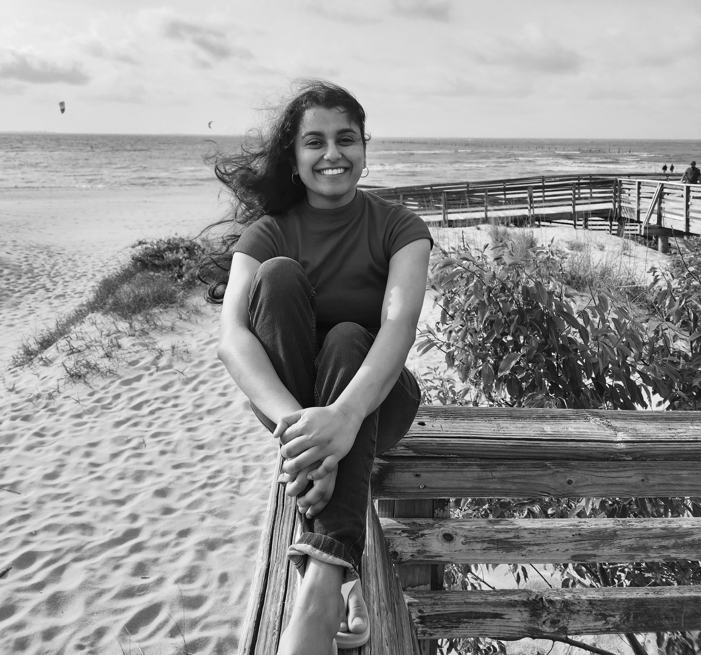

I'm Anusha Jagadish.
Graduate Student at George Mason University.
ABOUT ME
Hey there, wonderful readers! Today, I'm thrilled to share a glimpse into my world, my passions, and my journey. So, grab a cup of your favorite beverage, settle in, and let's dive into the tapestry of my life.
I hail from a charming little town in India, where the days were filled with sunshine, and the nights were illuminated by the starry skies. As a child, I was blessed with an insatiable curiosity that seemed to grow with each passing day. I vividly remember those afternoons under the shade of a massive banyan tree, surrounded by a stack of books that carried me to distant lands and introduced me to fascinating characters.
Growing up, my fascination with technology was like a spark that ignited a blazing fire within me. It was during my high school years that I stumbled upon the enchanting world of programming. Python, C, Java – these languages became my magical spells, allowing me to craft digital worlds and bring my ideas to life. While my friends were playing outdoors, I was crafting my own adventures in the realm of code.
Now, as much as I adore technology, there's another side of me that's equally passionate about something entirely different – comedy sitcoms. Yes, you heard that right! I find immense joy in the laughter these shows bring. On weekends, you'll often find me cozied up on the couch, a bowl of popcorn in hand, and lost in the hilarious antics of my favorite characters. I firmly believe that laughter is a remedy for the soul, and I can't help but share this enthusiasm with those around me.
But there's more to me than just coding and comedy. I'm incredibly driven and thrive when leading teams and projects. Being a reliable captain through stormy seas is where I shine the brightest. My ability to inspire and support my team members is a source of great pride for me. Whether it's coordinating events, diving deep into research, or steering projects toward success, I take on each challenge with unwavering dedication and a sprinkle of my signature humor.
Additionally, my journey has led me to explore the world of customer service. I've discovered that every customer interaction is an opportunity to make someone's day a little brighter. With my warm and professional approach, I've had the pleasure of turning disgruntled customers into satisfied ones, and that's a reward in itself.
My journey is far from over, my dear readers. With my boundless curiosity, technical expertise, and infectious laughter, I'm excited to continue making my mark on the world. Whether it's writing lines of code that push the boundaries of what's possible or sharing hearty laughs with friends over a classic sitcom, I'm a unique blend of brilliance, humor, and kindness.
Thanks for joining me on this adventure through the pages of my life. Stay tuned for more tales from the multifaceted world of Anusha Jagadish. Until next time, keep smiling and keep coding!
CONTACT ME
Fairfax, VA
Phone: +1 123 456 789
Email: ajagadis@gmu.edu